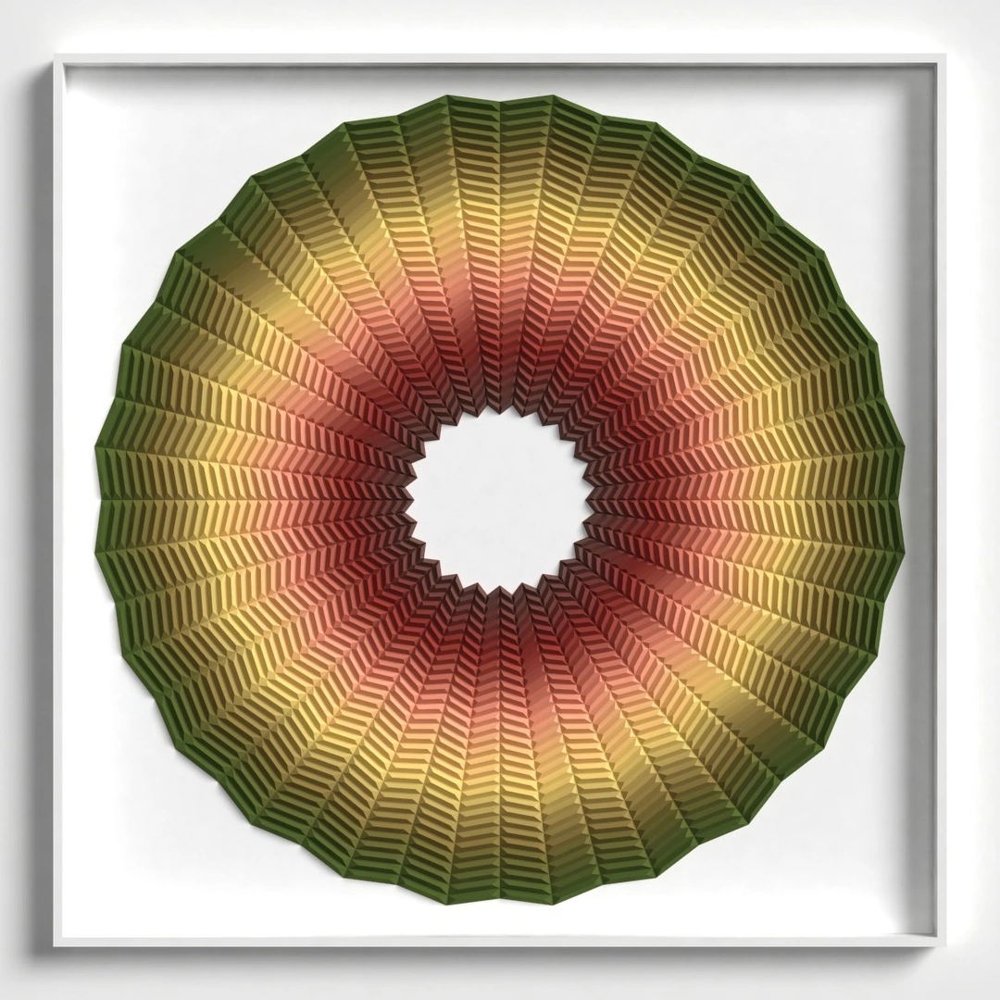

Paper relief
Continuum
48 × 48 × 1.5 in · Folded paper
Concentric bands move from muted red near the open center through pale yellow to an olive green perimeter. The repeated folded forms create a continuous circular pattern with alternating light and shadow.
Views from the artist’s original post. The close-up is a crop of the source image.
Inquire about this work ↗Contact a representing gallery ↗Artist’s original post ↗